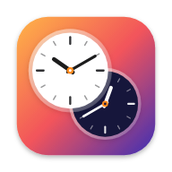

Large Plan calls
Both clocks plus an hour-by-hour IST → ET table for the next eight hours. A green dot marks US working hours (9 AM–6 PM, Monday to Friday), and a footnote tells you when New York next switches between EDT and EST.

Notification Center widget for macOSKeep India time and US Eastern time side by side in Notification Center, and convert IST to EST or EDT in one click.
Free & open source · macOS 14+ · No tracking
India Standard Time (IST, UTC+5:30) is 9h 30m ahead of New York while the US is on daylight saving time (EDT, UTC−4) and 10h 30m ahead during standard time (EST, UTC−5).
Pick a date and time in India or New York to see it in the other zone. Daylight saving time is handled for you, so the result is always labelled EST or EDT correctly.
Tip: the page address updates as you type, so you can bookmark or share a conversion.
Pin them in Notification Center next to Apple’s own widgets, or drag them onto your desktop. Choose the style and size that fit how often you schedule calls between India and the US.
Both clocks plus an hour-by-hour IST → ET table for the next eight hours. A green dot marks US working hours (9 AM–6 PM, Monday to Friday), and a footnote tells you when New York next switches between EDT and EST.

Two analog faces that turn dark at night, the digital time and date for each city, and an offset badge in the middle.

Two digital clocks, India on top and New York below, with the current time difference.

The IST to EST Digital widget shows large digital clocks for both cities with seconds that tick live, a sun or moon for day and night, and the date in each city. It comes in the same three sizes; the large one also spells out the gap and the next daylight saving change.
Both widgets follow your Mac’s light or dark appearance and its 12- or 24-hour clock setting. Search for “IST to EST” in the widget gallery to find them.
Built for distributed teams, families and anyone who keeps asking “what time is it in New York right now?”
Small, medium and large layouts for Notification Center or the desktop on macOS Sonoma, Sequoia and Tahoe.
Uses the macOS time zone database, so New York switches between EST and EDT on exactly the right day.
The large widget lists the coming hours in IST and ET and highlights US working hours.
The app converts any date and time from IST to ET or back, with swap and one-click copy.
Follows your Mac’s appearance, and analog faces turn dark at night, just like World Clock.
No network access, no accounts, no analytics. Everything is calculated on your Mac.
Written in SwiftUI and WidgetKit. The widget refreshes every minute without draining your battery.
MIT-licensed on GitHub. Read the code, report issues or build it yourself.
It takes about thirty seconds. These steps work on macOS 14 Sonoma, macOS 15 Sequoia and macOS 26 Tahoe.
Prefer the desktop? Right-click an empty part of the desktop, choose and drag IST to EST wherever you like.
Version 1.0.0 for macOS 14 Sonoma or later. Open the disk image, drag IST to EST into Applications and launch it once.
Checksums: SHA256SUMS.txt · All releases
No Apple developer account needed. Install Xcode and XcodeGen, then:
git clone https://github.com/surendrallam/ist-to-est-macos-widget.git
cd ist-to-est-macos-widget
xcodegen generate
open ISTtoEST.xcodeprojReleases built without an Apple Developer ID are ad-hoc signed, so Gatekeeper blocks the first launch with a message that Apple could not verify the app. You only need to do this once:
xattr -dr com.apple.quarantine "/Applications/IST to EST.app"Releases that are signed with a Developer ID and notarized by Apple open without this step.
India doesn’t change its clocks, so converting IST to Eastern time only depends on the season in the US. Subtract 9 hours 30 minutes while New York is on EDT (March to November) and 10 hours 30 minutes while it is on EST (November to March).
US working hours (9 AM–6 PM ET)Times on the previous day are marked “(previous day)”.
| India IST · UTC+5:30 | New York, summer EDT · IST − 9:30 | New York, winter EST · IST − 10:30 |
|---|---|---|
| 12:00 AM 00:00 | 2:30 PM 14:30 (previous day) | 1:30 PM 13:30 (previous day) |
| 1:00 AM 01:00 | 3:30 PM 15:30 (previous day) | 2:30 PM 14:30 (previous day) |
| 2:00 AM 02:00 | 4:30 PM 16:30 (previous day) | 3:30 PM 15:30 (previous day) |
| 3:00 AM 03:00 | 5:30 PM 17:30 (previous day) | 4:30 PM 16:30 (previous day) |
| 4:00 AM 04:00 | 6:30 PM 18:30 (previous day) | 5:30 PM 17:30 (previous day) |
| 5:00 AM 05:00 | 7:30 PM 19:30 (previous day) | 6:30 PM 18:30 (previous day) |
| 6:00 AM 06:00 | 8:30 PM 20:30 (previous day) | 7:30 PM 19:30 (previous day) |
| 7:00 AM 07:00 | 9:30 PM 21:30 (previous day) | 8:30 PM 20:30 (previous day) |
| 8:00 AM 08:00 | 10:30 PM 22:30 (previous day) | 9:30 PM 21:30 (previous day) |
| 9:00 AM 09:00 | 11:30 PM 23:30 (previous day) | 10:30 PM 22:30 (previous day) |
| 10:00 AM 10:00 | 12:30 AM 00:30 | 11:30 PM 23:30 (previous day) |
| 11:00 AM 11:00 | 1:30 AM 01:30 | 12:30 AM 00:30 |
| 12:00 PM 12:00 | 2:30 AM 02:30 | 1:30 AM 01:30 |
| 1:00 PM 13:00 | 3:30 AM 03:30 | 2:30 AM 02:30 |
| 2:00 PM 14:00 | 4:30 AM 04:30 | 3:30 AM 03:30 |
| 3:00 PM 15:00 | 5:30 AM 05:30 | 4:30 AM 04:30 |
| 4:00 PM 16:00 | 6:30 AM 06:30 | 5:30 AM 05:30 |
| 5:00 PM 17:00 | 7:30 AM 07:30 | 6:30 AM 06:30 |
| 6:00 PM 18:00 | 8:30 AM 08:30 | 7:30 AM 07:30 |
| 7:00 PM 19:00 | 9:30 AM 09:30 | 8:30 AM 08:30 |
| 8:00 PM 20:00 | 10:30 AM 10:30 | 9:30 AM 09:30 |
| 9:00 PM 21:00 | 11:30 AM 11:30 | 10:30 AM 10:30 |
| 10:00 PM 22:00 | 12:30 PM 12:30 | 11:30 AM 11:30 |
| 11:00 PM 23:00 | 1:30 PM 13:30 | 12:30 PM 12:30 |
IST is 10 hours 30 minutes ahead of EST. India Standard Time is UTC+5:30 and Eastern Standard Time is UTC−5, so 9:00 PM IST is 10:30 AM EST on the same day.
IST is 9 hours 30 minutes ahead of EDT. Eastern Daylight Time is UTC−4, so 9:00 PM IST is 11:30 AM EDT on the same day.
Twice a year, because only the US uses daylight saving time. US Eastern clocks spring forward to EDT on the second Sunday of March and fall back to EST on the first Sunday of November. India has no daylight saving time and stays on IST all year, so the gap is 9h 30m from March to November and 10h 30m from November to March.
Not quite. ET (Eastern Time) is the time zone used by New York; it observes EST (UTC−5) in winter and EDT (UTC−4) in summer. Many people write EST all year, but from March to November the correct abbreviation is EDT. The widget always shows the one in effect.
Subtract 10 hours 30 minutes: 9:00 AM IST is 10:30 PM EST on the previous day. From March to November, when New York is on daylight saving time, subtract 9 hours 30 minutes instead: 9:00 AM IST is 11:30 PM EDT on the previous day.
No. The app and widget work completely offline. They use the time zone database built into macOS, make no network requests and collect no data.
Yes. IST to EST is free and open source under the MIT license. Download it from GitHub Releases or build it yourself from the source code.
IST to EST needs macOS 14 Sonoma or later. It also works on macOS 15 Sequoia and macOS 26 Tahoe.
Move IST to EST to the Applications folder and open it once. Then click the date and time in the menu bar to open Notification Center, scroll down and click Edit Widgets, search for “IST to EST” and drag the small, medium or large widget into Notification Center or onto the desktop.